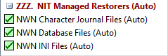

Groups are a way of organising your Mods into categories, such as the Mods you have recently downloaded and need to prepare for installation or the games you think are worth playing. They make long Mod lists more readable by breaking them into smaller sections and help deal with file conflicts.
The Tool's naming convention is to prefix Group names with a three digit number terminated with a period and two space characters (eg 800. Worth Playing). This approach makes it easy to create a predictable sort sequence, which is important when using Groups to manage file conflicts.
|
Installer Tool Created Groups |
|
|
799. Mods Installed by NWN |
This Group is created when you select Create Original Restorers from the Manage menu or when you answer Yes to the Create default Restorers message. |
|
820. Steam Workshop |
This Group is created when you enable Use NIT to manage Steam's Workshop Content on the Preferences page in Advanced Settings. |
|
ZZZ. NIT Managed Restorers (Auto) |
Contains INI, Database and Character Journal Notes file Restorers created and maintained by the Installer Tool.  |
Moving Mods from one Group to another